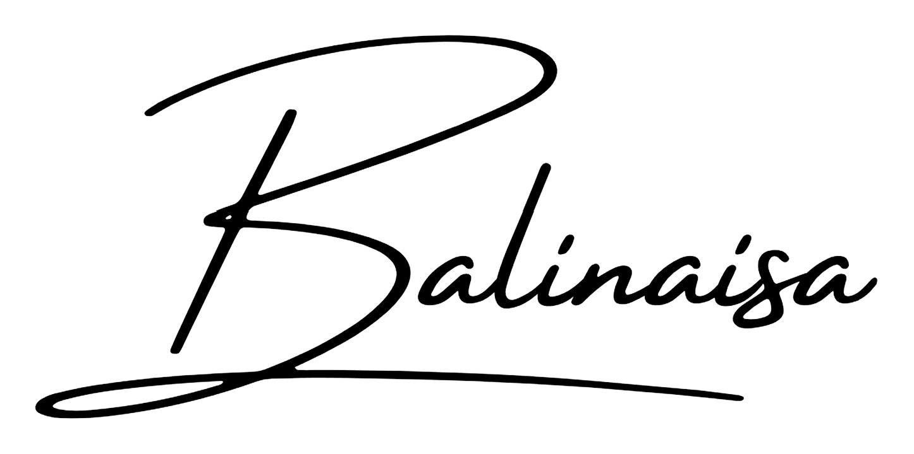
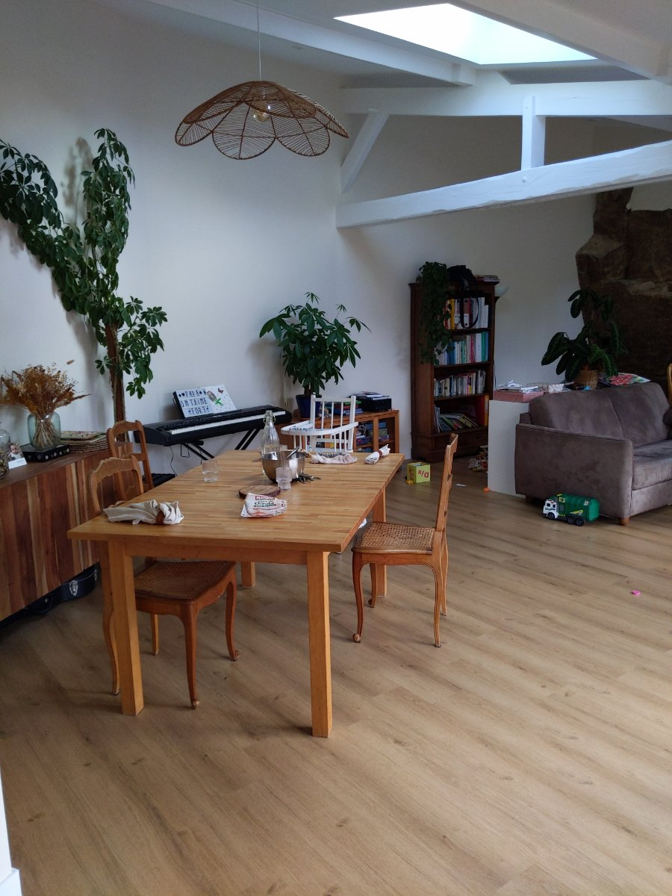
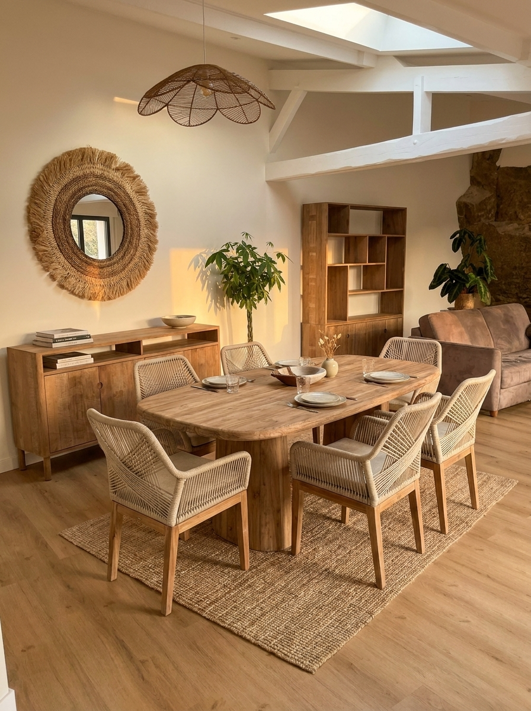
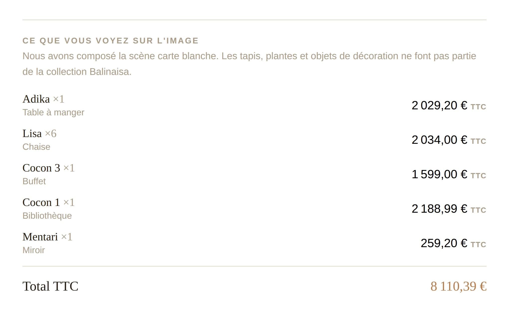

Balinaisa.ai · Note technique · Septembre 2026
Annexe technique au communiqué de presse. Comment nous obligeons un générateur d'images à ne placer chez vous que des meubles qui existent, au prix auquel nous les vendons.

Avant
AprèsUn générateur d'images produira toujours quelque chose de joli. C'est précisément le problème. Demandez-lui de meubler un salon, il dessinera une table élégante qui n'existe dans aucun catalogue, à un prix qu'il ne connaît pas. L'image est séduisante et commercialement inutilisable : personne ne peut vendre ce meuble, et nous ne saurions pas vous le livrer.
Balinaisa fabrique du mobilier en teck massif entre la France et l'Indonésie. Nos clients butaient sur la projection : il est difficile d'acheter une table à deux mille euros sans se figurer ce qu'elle donne chez soi. Le besoin était clair. La contrainte l'était tout autant.
C'est cette contrainte, et non la génération d'image, qui a dicté toute l'architecture de Balinaisa.ai. Nous l'avons construite avec Paktiz, notre partenaire technique, qui en a assuré la conception et l'intégration.
La tentation naturelle est de décrire le style souhaité au générateur et d'espérer. Nous avons pris le problème dans l'autre sens : le modèle ne choisit jamais un meuble, il reçoit ceux qu'il doit reproduire.
Le catalogue compte 97 références réparties en 17 familles, du tabouret à 74 euros à la table à 4 407 euros hors taxes. Chaque référence porte trois choses, et c'est le point qui fait tout basculer :
Ces trois champs sont renseignés sur 97 références sur 97. Ce n'est pas un détail de complétude : une seule référence sans photo, et le modèle redevient libre d'inventer sur celle-là.
Au moment de la génération, la requête ne dit pas « ajoute un fauteuil ». Elle transmet la photo du fauteuil retenu et son descriptif, et demande de le placer dans votre pièce. Le modèle ne compose plus, il transpose. C'est une contrainte beaucoup plus forte qu'une consigne écrite, et beaucoup plus fiable qu'un contrôle après coup.
Le devis suit mécaniquement : il additionne les prix des références effectivement retenues. Il n'est pas estimé par catégorie, il n'est pas arrondi. Ce que l'outil ajoute pour la mise en scène, tapis, plantes, objets, vous est signalé et ne vous est pas facturé.

Vous envoyez une photo, un horizon d'achat si vous en avez un, une adresse email. Une minute plus tard, vous recevez le rendu et le devis. Entre les deux, une chaîne d'automatisation orchestrée sous n8n.
Le workflow principal compte 79 nœuds et 65 liaisons : 19 nœuds de code, 8 appels HTTP, 7 branchements conditionnels, 6 accès à Google Sheets, 6 à Drive. Deux workflows secondaires gèrent l'ingestion des demandes venues d'autres canaux et le récapitulatif quotidien envoyé à Dominique Raynal.
Les étapes qui comptent, dans l'ordre :
Chaque simulation consomme deux appels de modèle payants. Un robot qui boucle sur le formulaire ne fait donc pas que polluer notre base de demandes, il consomme un budget réel. Les garde-fous ci-dessous ne sont pas de la sécurité d'apparat, ce sont les conditions économiques d'un service gratuit.
Un seul compteur se contourne toujours. Trois compteurs indépendants se contournent beaucoup moins, parce qu'ils ne mesurent pas la même chose : un visiteur légitime qui refait une simulation, un script qui martèle depuis une adresse, et le budget de la journée.
Le détail qui compte : le plafond par email ne compte que les simulations abouties, alors que le plafond journalier compte toutes les tentatives valides. Un visiteur dont la génération a échoué ne consomme pas son quota, et le budget de la journée reste protégé.
Lire une pièce et choisir un mobilier cohérent est un travail de raisonnement. Produire l'image en est un autre. Vouloir qu'un seul modèle fasse les deux revient à payer le meilleur des deux tarifs sur la totalité du travail, pour un résultat moins bon sur chaque moitié.
La chaîne alterne donc. Un modèle de raisonnement lit la photo, identifie le volume, la lumière et le style, puis sélectionne dans les 97 références. Un modèle d'image reçoit ensuite cette sélection, avec la photo de référence de chaque produit, et compose la scène. Chacun sur son métier.
Un générateur d'images met plusieurs dizaines de secondes à répondre et dépasse parfois le délai. Vous renvoyer une erreur pour cette raison serait perdre un projet sur un incident passager.
Quatre étages se relaient sur le rendu, chacun avec trois tentatives espacées de trois secondes. Le troisième étage est celui qui mérite l'attention : il bascule sur un modèle plus léger et plus rapide. Nous y acceptons sciemment un rendu un peu moins fin plutôt qu'un échec, et il coûte moins cher que le modèle de qualité. Le quatrième revient au modèle nominal, au cas où l'incident serait passé.
Autrement dit, la dégradation est un choix de conception et non un accident. Vous recevez toujours quelque chose.
Le modèle de lecture reçoit les 97 références avec leurs descriptifs à chaque simulation. C'est un bloc volumineux, identique d'une requête à l'autre, et c'est exactement ce qu'un cache de requête sait absorber.
Le bloc catalogue est donc marqué comme cacheable. L'économie n'est pas anecdotique et elle est arithmétique : une lecture depuis le cache coûte environ un dixième du prix d'entrée normal, l'écriture coûte 1,25 fois ce prix. Le seuil de rentabilité est atteint dès la deuxième requête qui partage le même début.
La nuance à connaître, et elle est structurante : la durée de vie par défaut d'une entrée est de cinq minutes, et chaque lecture relance le compteur. Le cache travaille donc à plein pendant les pics, quand les simulations s'enchaînent, et ne sert à rien la nuit. C'est le bon comportement pour ce service : il réduit la facture au moment précis où elle grimperait.
Ce raisonnement impose une discipline dans la construction de la requête. Le catalogue vient en premier, votre photo et votre demande viennent après. L'inverse invaliderait le cache à chaque appel sans qu'aucune erreur ne le signale.
Le devis est estimatif et n'engage pas commercialement. L'outil ne redessine pas le bâti : la charpente, les poteaux, le sol et les ouvertures restent ceux de votre photo, ce qui est une contrainte assumée et non une limite technique. Et le rendu reste une projection, pas une photographie du résultat final.
Côté données, la photo importée et le rendu ne servent qu'à produire la simulation et à suivre le projet. Ils ne sont cédés à aucun tiers, sont supprimés au-delà de trente-six mois, et le simulateur n'emploie ni cookie publicitaire ni traceur intersites. Politique complète sur balinaisa.ai/privacy-policy.html, suppression sur simple demande à contact@balinaisa.com.
Tout ce qui précède décrit une mécanique. Elle n'a d'intérêt que par ce qu'elle transporte. Ce que le modèle applique, ce sont des règles d'assemblage, de proportion et de matière que Dominique Raynal pratique depuis des années : quelles familles vont ensemble, ce qu'un volume supporte, ce qu'on ne met pas dans une véranda. Le catalogue contraint les meubles, ces règles contraignent la composition.
« J'ai souhaité associer mon expertise à l'Intelligence Artificielle afin de proposer une expérience plus immédiate, visuelle et personnalisée de l'aménagement. J'ai ainsi façonné Balinaisa.ai comme une extension de mon savoir-faire. Aujourd'hui, il compose pour vous, chez vous, comme si je poussais votre porte à vos côtés. »
Dominique Raynal, président-directeur général de Balinaisa
La question que nous nous sommes posée n'a donc jamais été « quel modèle utiliser ». Elle a été : de quoi notre catalogue doit-il être capable pour que le modèle n'ait plus le droit d'inventer. Une photo de référence et un descriptif par produit valent mieux que n'importe quel réglage de formulation.
Essayer l'outil
Le simulateur est public et gratuit, sans création de compte : balinaisa.ai. Nous proposons également une démonstration en direct ou un accompagnement sur un cas de votre choix.
Contact presse
contact@balinaisa.com · 07 45 06 52 16
Balinaisa, 370 avenue de l'Aérodrome, 33260 La Teste-de-Buch
Balinaisa est une maison française de mobilier et décoration spécialisée dans une gamme premium en teck, entre la France et l'Indonésie. Balinaisa.ai a été conçu et intégré par Paktiz, partenaire technique de la maison. Les éléments de ce document sont libres de reproduction dans un cadre rédactionnel, avec la mention « Balinaisa ». Les chiffres cités sont relevés sur le catalogue et la chaîne d'automatisation en production au 3 septembre 2026.